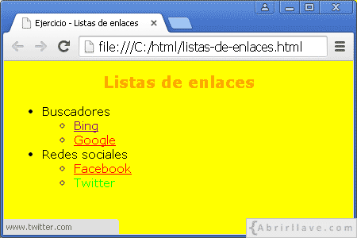
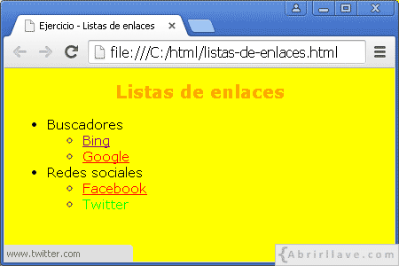

FLEX BOX

Flexbox es un módulo de diseño de CSS3 que se creó para mejorar la forma en la que se hace diseño responsive, evitando así el uso de float, escribiendo menos código y facilitando el posicionamiento de elementos, incluso no teniendo noción del tamaño de éstos.
 
